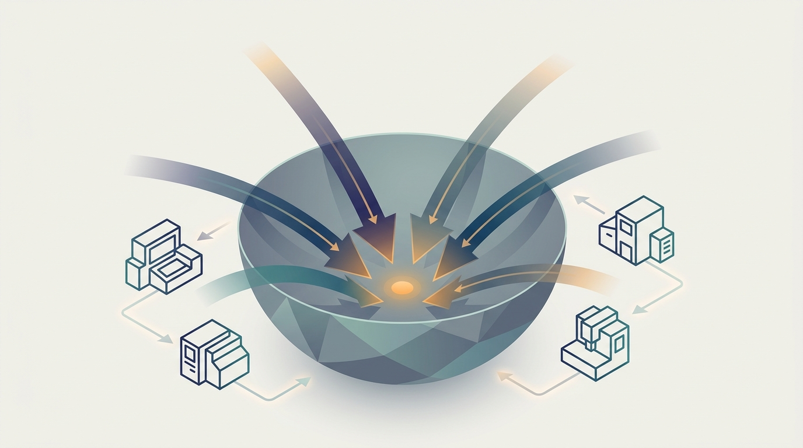

"Eight of us computed a gradient on eight different shards of the data. For one glorious all-reduce we agreed on a single direction, took one step together, and then immediately scattered to disagree about the next one."
An All-Reduce That Has Seen Some Gradients
Every chapter before this one moved data across machines; this chapter moves a learning algorithm across machines, and the single operation that makes it possible is splitting one gradient computation into many partial gradients that are summed back into one. Training a model means repeatedly computing a gradient over a dataset and stepping the parameters against it. When the dataset is too large to pass through one machine in reasonable time, or the model must see more data per second than one processor can deliver, the gradient computation itself must be distributed: each worker computes a gradient on its own shard of the data, and the workers combine those partial gradients into the update that every copy of the model then applies. That one idea, distribute the gradient and aggregate it, is the engine of nearly all distributed learning, and this chapter builds it from the optimization problem up. It opens with empirical risk minimization, the objective that every gradient is descending, and mini-batch stochastic gradient descent, the algorithm whose per-step gradient is already an average over examples and therefore already a sum waiting to be split. From there it builds the two ways workers can coordinate, synchronous SGD where everyone waits to agree on each step and asynchronous SGD where they do not, and the all-reduce collective from Chapter 4 that sums gradients across workers without a central bottleneck. It then confronts the costs that distribution imposes: stale gradients computed against an out-of-date model, the communication that can dominate computation, the learning-rate retuning that large batches demand, and the theoretical limits on how cheaply any distributed optimizer can communicate. It closes with the convergence behavior and practical trade-offs that decide whether a given configuration actually trains faster. The shuffle of Chapter 6 returns here as the gradient all-reduce, and the communication lenses of Part I become the budget that every method in this chapter is spending.
Chapter Overview
This is the first chapter of Part III, and it makes the turn the whole book has been building toward: from distributing data to distributing learning. Parts I and II gave you the machinery, the communication primitives, the performance models, the partitioned storage, and the streaming pipelines. This chapter spends that machinery on the central act of machine learning, optimizing a model's parameters by gradient descent, and asks the one question that defines distributed training: when the gradient computation is spread across many workers, how do they combine their partial work into a single update, and what does that coordination cost?
The chapter develops the subject in three movements. The first sets up the optimization problem and the algorithm: empirical risk minimization as the objective being minimized, and mini-batch SGD as the workhorse whose gradient is already an average and therefore naturally decomposes into a sum across machines. The second builds the coordination patterns. Synchronous distributed SGD has every worker compute a gradient on its shard and wait for a global sum before stepping, which keeps the math identical to single-machine SGD but exposes the run to stragglers. Asynchronous distributed SGD lets workers update without waiting, trading exact agreement for throughput. The all-reduce collective ties the synchronous case together, summing gradients across workers in a bandwidth-optimal, bottleneck-free pattern that is the dominant approach in modern data-parallel training. The third movement confronts what distribution costs and how to pay it down: stale and delayed gradients and the staleness-tolerant analysis that bounds their damage, communication-efficient methods (quantization, sparsification, and local SGD) that shrink the bytes moved per step, large-batch training and the learning-rate scaling rules that keep big batches converging, the communication-complexity lower bounds that say how cheap any method can possibly be, and finally the convergence and practical trade-offs that turn all of this into an engineering decision.
Read in order, the ten sections take you from "minimize the average loss over the data" to a working command of how that minimization is split across a cluster, summed by a collective, and tuned so that more machines actually mean faster training: the learning-system counterpart to the data systems of Part II, and the foundation on which the parameter servers, deep-learning parallelism, and federated methods of the rest of Part III and Part IV are built.
Prerequisites
This chapter opens Part III and leans most heavily on Part I. From Chapter 4: Communication Primitives for Distributed Training you carry the collective operations, above all all-reduce, all-gather, and reduce-scatter; the gradient aggregation of Section 10.5 is all-reduce applied to a gradient vector, and the ring and tree schedules you met there are exactly what makes synchronous distributed SGD scale without a central bottleneck. From Chapter 1: What Is Scale-Out AI? you carry the gradient identity that the whole chapter rests on, that the gradient of a sum is the sum of the gradients, so a gradient over a sharded dataset is the sum of per-shard gradients and can be computed in parallel and added back. You also draw on the latency, bandwidth, and scalability lenses of Chapter 3: Scalability and Performance Models to judge when communication overtakes computation and what speedup a given worker count can actually deliver, and you reuse the partitioned-data and shuffle intuition of Chapter 6: The MapReduce Model and Distributed Algorithms, since aggregating gradients across workers is the same all-to-one reduction the shuffle performs. The chapter assumes comfortable Python (the examples are PyTorch and torch.distributed style), single-machine gradient descent and the chain rule, and basic probability for reasoning about stochastic gradients; the optimization and linear-algebra background is refreshed in Appendix A: Mathematical Background.
Learning Objectives
- State the empirical risk minimization objective, explain why its gradient is a sum over examples, and use that structure to decompose a gradient computation across many machines.
- Derive mini-batch stochastic gradient descent, explain why a mini-batch gradient is an unbiased estimate of the full gradient, and identify the mini-batch as the unit that distributed training splits across workers.
- Describe synchronous distributed SGD, show that its global update is mathematically identical to single-machine SGD on the combined batch, and explain why the straggler is its defining weakness.
- Describe asynchronous distributed SGD, explain the throughput it buys and the gradient staleness it introduces, and reason about when the trade is worth it.
- Implement gradient aggregation with all-reduce, explain why it has no central bottleneck, and contrast it with a parameter-server reduction.
- Bound the effect of stale and delayed gradients on convergence, and apply communication-efficient methods (quantization, sparsification, local SGD) to reduce bytes moved per step.
- Apply learning-rate scaling rules for large-batch training, state what communication-complexity lower bounds imply for any distributed optimizer, and weigh the convergence-versus-throughput trade-offs that decide a real configuration.
If you keep one thing from this chapter, keep this: distributed training works because the gradient of an average loss is the average of per-example gradients, so the gradient can be computed in parallel on shards of the data and summed back into one update, and the entire craft of distributed optimization is trading the throughput of computing those partial gradients against the cost of communicating and aggregating them into agreement. Read forward, the sections build the idea in layers: first the empirical risk objective and the mini-batch gradient that is already a sum, then the synchronous and asynchronous ways workers coordinate that sum, then the all-reduce collective that performs it without a bottleneck, and finally the costs distribution imposes (staleness, communication volume, large-batch tuning, and the theoretical limits) and the convergence trade-offs that turn them into an engineering choice. Read as a question, the chapter asks of any distributed training run: how is the gradient split, how do the workers agree on the step, and what does that agreement cost in bytes and in staleness, and that question is the one you carry into the parameter servers, data-parallel deep learning, and federated methods of the chapters ahead. The roadmap below walks the ten sections that build that habit of mind.
Chapter Roadmap
- 10.1 Empirical Risk Minimization at Scale Sets the objective the whole chapter descends, minimizing the average loss over a dataset, and shows why its gradient is a sum over examples that splits cleanly across machines.
- 10.2 Mini-Batch Stochastic Gradient Descent Builds the workhorse algorithm, the mini-batch gradient that is an unbiased average over a sample of examples, and identifies the mini-batch as the unit distributed training divides among workers.
- 10.3 Synchronous Distributed SGD Has every worker compute a gradient on its shard and wait for a global sum before stepping, keeping the update identical to single-machine SGD while exposing the run to the straggler.
- 10.4 Asynchronous Distributed SGD Lets workers update the model without waiting for one another, trading exact agreement for throughput and introducing the gradient staleness that later sections must contain.
- 10.5 Gradient Aggregation and All-Reduce SGD Performs the gradient sum with the all-reduce collective from Chapter 4, summing across workers in a bandwidth-optimal pattern with no central bottleneck, the dominant approach in modern data-parallel training.
- 10.6 Stale and Delayed Gradients Confronts the gradient computed against an out-of-date model, the price asynchrony charges, and the staleness-bounded analysis that says how far behind a gradient can fall before it hurts.
- 10.7 Communication-Efficient Optimization Shrinks the bytes moved per step through quantization, sparsification, and local SGD, paying down the communication cost that all-reduce and parameter servers alike must spend.
- 10.8 Large-Batch Training and Learning-Rate Scaling Uses many workers to enlarge the effective batch and applies the learning-rate scaling rules (linear scaling, warmup, LARS, LAMB) that keep very large batches converging.
- 10.9 Communication Complexity and Lower Bounds Asks how cheap any distributed optimizer can possibly be, establishing the communication-complexity lower bounds that bound what compression and clever scheduling can ever achieve.
- 10.10 Convergence and Practical Trade-Offs Closes the chapter by turning every prior choice into one engineering decision, weighing convergence rate against throughput to decide when more machines truly mean faster training.
Read the ten sections in order and you will hold a working command of how a learning algorithm is split across a cluster and reassembled into a single model: Section 10.1 sets the objective and Section 10.2 the mini-batch gradient that decomposes it, Sections 10.3 and 10.4 build the synchronous and asynchronous coordination patterns, Section 10.5 performs the aggregation with all-reduce, and Sections 10.6 through 10.10 confront staleness, communication volume, large-batch tuning, the theoretical limits, and the trade-offs that decide a real configuration. The thread to watch is the all-reduce of Chapter 4 and the shuffle of Chapter 6: a gradient aggregation is that same all-to-one reduction run on every training step, and the synchronous-versus-asynchronous tension you meet here returns as the central design axis of the parameter servers in Chapter 11 and the data-parallel deep learning of Chapter 15.
What's Next?
This chapter opened Part III by distributing the gradient itself. It assumed, in the all-reduce and synchronous patterns, that every worker holds a full copy of the model and only the gradients need combining. Chapter 11: Parameter Servers and Distributed Embeddings relaxes that assumption and asks what happens when the model is too large for one worker to hold, or so sparse that only a few of its parameters are touched per step. It builds the parameter-server architecture, where parameters live on dedicated servers that workers push gradients to and pull updates from, the bounded-staleness consistency that sits between the synchronous and asynchronous extremes you met here, and the terabyte-scale distributed embedding tables that power industrial recommendation systems. The asynchronous SGD and stale-gradient analysis of this chapter become the consistency model of the parameter server, and the all-reduce returns as its principal rival. Read it next, and watch the gradient you learned to aggregate become a model you must also shard.
Bibliography & Further Reading
Foundational Papers
Robbins, H., Monro, S. "A Stochastic Approximation Method." Annals of Mathematical Statistics, 1951. projecteuclid.org
The paper that introduced stochastic approximation, the ancestor of every stochastic gradient method in this chapter and the origin of the diminishing step-size conditions for convergence.
Bottou, L., Curtis, F. E., Nocedal, J. "Optimization Methods for Large-Scale Machine Learning." arXiv:1606.04838, 2016. arxiv.org/abs/1606.04838
The definitive survey of stochastic optimization for machine learning, unifying empirical risk minimization, mini-batch SGD, and convergence analysis; the theoretical backbone of Sections 10.1, 10.2, and 10.10.
Recht, B., Re, C., Wright, S., Niu, F. "Hogwild!: A Lock-Free Approach to Parallelizing Stochastic Gradient Descent." NeurIPS, 2011. arxiv.org/abs/1106.5730
The lock-free asynchronous SGD scheme that proved coordinated locking is unnecessary when updates are sparse; the foundation for the asynchronous and stale-gradient material of Sections 10.4 and 10.6.
Dean, J., Corrado, G., Monga, R., Chen, K., Devin, M., Le, Q. V., et al. "Large Scale Distributed Deep Networks." NeurIPS, 2012. papers.nips.cc
The DistBelief paper introducing Downpour SGD and the parameter-server style of asynchronous distributed training; the system origin of Sections 10.3 and 10.4.
Ho, Q., Cipar, J., Cui, H., Lee, S., Kim, J. K., Gibbons, P. B., et al. "More Effective Distributed ML via a Stale Synchronous Parallel Parameter Server." NeurIPS, 2013. papers.nips.cc
The stale synchronous parallel model that bounds how far behind any worker may fall, defining the staleness-tolerant middle ground analyzed in Section 10.6.
Large-Batch Training
Goyal, P., Dollar, P., Girshick, R., Noordhuis, P., Wesolowski, L., Kyrola, A., et al. "Accurate, Large Minibatch SGD: Training ImageNet in 1 Hour." arXiv:1706.02677, 2017. arxiv.org/abs/1706.02677
The linear learning-rate scaling rule and gradual warmup that made very large batches train without losing accuracy; the primary reference for Section 10.8.
You, Y., Gitman, I., Ginsburg, B. "Large Batch Training of Convolutional Networks." (LARS) arXiv:1708.03888, 2017. arxiv.org/abs/1708.03888
Layer-wise adaptive rate scaling, which sets a per-layer learning rate to keep enormous batches stable; one of the scaling rules covered in Section 10.8.
You, Y., Li, J., Reddi, S., Hseu, J., Kumar, S., Bhojanapalli, S., et al. "Large Batch Optimization for Deep Learning: Training BERT in 76 Minutes." (LAMB) arXiv:1904.00962, 2019. arxiv.org/abs/1904.00962
The LAMB optimizer extending layer-wise adaptive scaling to Adam-style updates and enabling extreme-batch transformer pretraining; the second scaling rule in Section 10.8.
Communication-Efficient Optimization
Alistarh, D., Grubic, D., Li, J., Tomioka, R., Vojnovic, M. "QSGD: Communication-Efficient SGD via Gradient Quantization and Encoding." arXiv:1610.02132, 2016. arxiv.org/abs/1610.02132
Quantized SGD with provable convergence, which compresses gradients to a few bits before communication; a central method of Section 10.7.
Lin, Y., Han, S., Mao, H., Wang, Y., Dally, W. J. "Deep Gradient Compression: Reducing the Communication Bandwidth for Distributed Training." arXiv:1712.01887, 2017. arxiv.org/abs/1712.01887
Gradient sparsification with momentum correction that cuts communication volume by orders of magnitude while preserving accuracy; a key sparsification method in Section 10.7.
Vogels, T., Karimireddy, S. P., Jaggi, M. "PowerSGD: Practical Low-Rank Gradient Compression for Distributed Optimization." arXiv:1905.13727, 2019. arxiv.org/abs/1905.13727
A low-rank gradient compressor that is all-reduce compatible and fast in practice; a modern communication-efficient method discussed in Section 10.7.
Stich, S. U. "Local SGD Converges Fast and Communicates Little." arXiv:1805.09767, 2018. arxiv.org/abs/1805.09767
The convergence analysis showing that letting workers take several local steps between synchronizations preserves convergence while cutting communication rounds; the theory behind local SGD in Section 10.7.